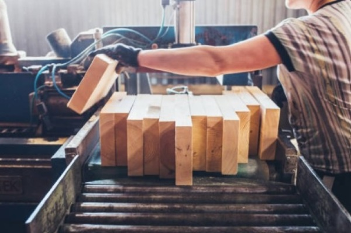

Lamination (Woods)
Lamination (Woods):

Bonding layers of wood together for complex shapes or added strength
How it works:
- Thin layers of wood are cut out and stuck together using adhesive inbetween each layer (usually PVA)
- A former is used to achieve the desired shape
- Clamps/vaccuum bag apply pressure whilst the adhesive sets
- Once formed the laminated timber can be trimmed and sized
| Advantages | Disadvantages |
|---|---|
|
|